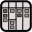

<!doctype html>
<html>
  <head>
    <meta charset="utf-8">
    <meta http-equiv="X-UA-Compatible" content="IE=edge,chrome=1">
    <meta name="viewport" content="width=device-width, minimum-scale=1.0, initial-scale=1, user-scalable=yes">
    
    <title>Workflow</title>
    <meta name="description" content="A collaborative real-time white- and kanban board."/>
    <meta name="copyright" content="Mark-André Hopf <mhopf@mark13.org>"/>
<!--
    <script type="application/javascript" src="polyfill/webcomponents-lite.min.js"></script>
-->
    <script type="application/javascript" src="polyfill/webcomponents-hi-sd-ce.js"></script>
    <script type="application/javascript" src="polyfill/path-data-polyfill.js"></script>
    <script type="application/javascript" src="js/workflow.js"></script>

    <template id="logonScreen">
    <style>
      .logon {
        margin: 0 auto; /* center horizontally */
        max-width: 512px;
        display: grid;
        grid-template-columns: 68px 1fr 1fr
      }
      .logon-text {
        grid-column-start: 2;
        grid-column-end: 4;
      }
      .logon-label {
        grid-column-start: 2;
      }
      .logon-input {
        grid-column-start: 3;
      }
    </style>
    <div class="logon">
      
      <div class="logon-text"><toad-slot model="disclaimer"></toad-slot></div>

      <label class="logon-label" for="logon">Logon:</label>
      <toad-text class="logon-input" id="logon" model="logon" /></toad-text>

      <label class="logon-label" for="password">Password:</label>
      <toad-text class="logon-input" id="password" model="password" /></toad-text>

      <label class="logon-label" for="remember">
        Remember me (for up to <toad-slot model="lifetime">?</toad-slot> days):
      </label>
      <toad-checkbox class="logon-input" id="remember" model="remember" /></toad-checkbox>

      <toad-button class="logon-input" action="logon">Log on</toad-button>
      <div class="logon-text">
        Not a member? <a href="#">Sign up</a> for an account
      </div>
    </div>

      <div>
         Hint:<br />
         mark / secret<br />
         gita / lovely
      </div>
      <toad-slot model="message" style="color: #f00"></toad-slot>
    </template>
    
    <template id="homeScreen">
      <div style="position: absolute; left: 0; right: 0; top:0; height:48px; background-color: silver;">
         workflow - a collaborative whiteboard for kanban
        
<!--
        <button>add card</button>
        <button>edit layout</button>
        <button>settings</button>
        <button>user</button>
-->
      </div>
      
      <div id="toolbar" style="position: absolute; left: 0; width: 40px; top: 48px; bottom: 32px; background-color: #e3dbdb;"></div>
      
      <div id="board" style="overflow: scroll; position: absolute; left: 40px; right: 0px; top: 48px; bottom: 32px; background-color: #fd8;"></div>

      <div id="debug" style="position: absolute; left: 0; right: 0; height: 32px; bottom: 0; background-color: silver;"></div>
    </template>
    
    <style>
      :root {
        --toad-font-family: "Trebuchet MS", Futura, Helvetica Neue, Helvetica, Arial, sans-serif;
        --toad-font-size: 12px;
        --toad-outline-color: #9eccfb;
        --toad-selection-color: #0069d4;
      }
      body {
        font-family: var(--toad-font-family);
        font-size: var(--toad-font-size);
      }
    
      .fatradiobutton {
        border: 1px solid #e3dbdb;
        border-radius: 5px;
        background: #e3dbdb;
        width: 32px;
        height: 32px;
        padding: 3px;
      }

      .fatradiobutton-selected {
        background: #ac9393;
      }
    </style>
    
    <script type="application/javascript">
      workflow.main()
    </script>

  </head>
  <body></body>
</html>
